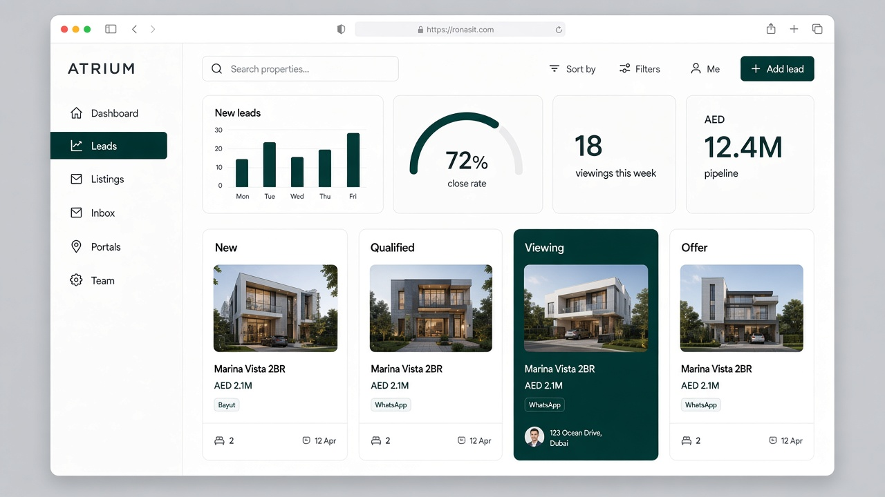
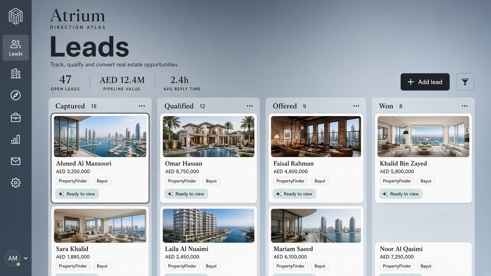
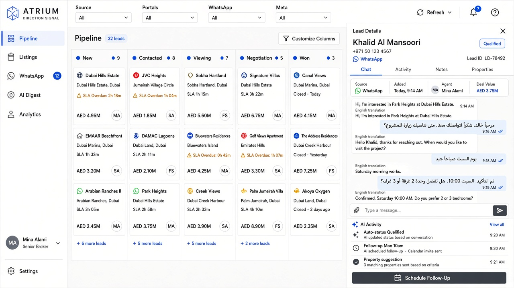

Same job as your BizLink example - sidebar, metrics, lead pipeline - rebuilt for real estate (listings, portals, WhatsApp, AED). Working name Atrium until you rename it. These are directions, not pixel-perfect clones of the reference.



Start with Cove as the shell (fastest, cleanest), then steal Signal’s lead drawer (chat + AI log) for the showcase moment. Atlas photo cards can come in once seed listings look good. That gives you a shippable pipeline first, without waiting for a full inbox product.